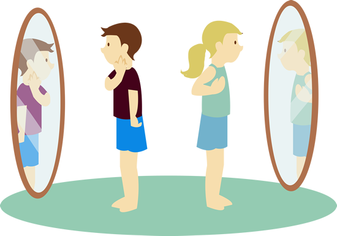
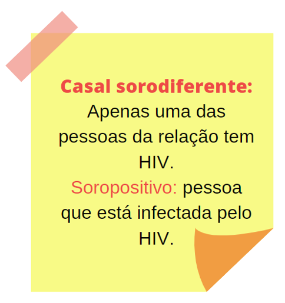
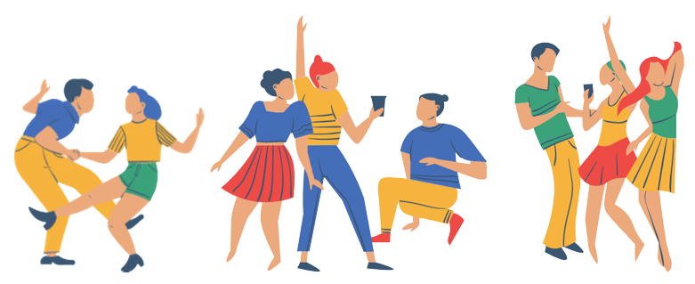
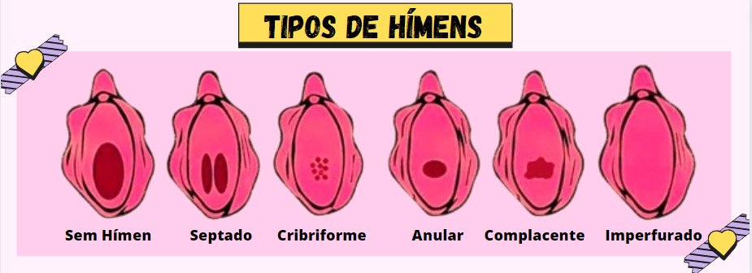
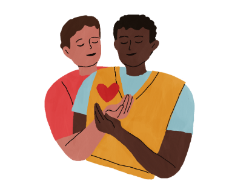
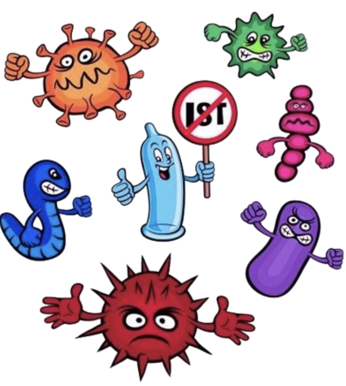
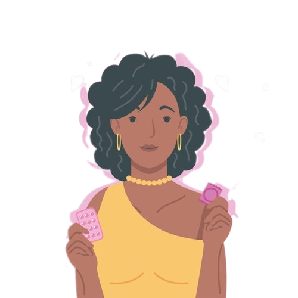
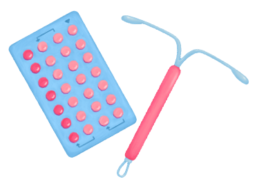

Visão
O 1OOTabu idealiza um mundo que reconhece o desenvolvimento sexual de crianças e adolescentes como, natural e saudável. Um mundo em que os jovens são apoiados e afirmados, e os adultos que convivem com eles se comunicam de forma aberta e honesta sobre puberdade, relacionamento, reprodução, sexualidade e sexo. Em tal mundo, os jovens teriam acesso a informações de forma segura e em fontes confiáveis, também teriam o apoio de que precisam para se tornarem adultos sexualmente saudáveis.
Missão
100Tabu é uma plataforma que aproveita a mídia digital para oferecer uma educação sexual honesta, positiva, segura e adequada para as crianças e adolescentes. O 100Tabu também busca ajudar adultos, como, pais, responsáveis, educadores e profissionais de saúde, a se comunicarem de maneira eficaz e sincera sobre sexo e sexualidade com crianças e adolescentes em suas vidas.
Estrategias
É aproveitar a experiência de mestres educadores em sexualidade e a contribuição de jovens estudantes da área da saúde, juntamente com o poder da internet para criar e fornecer de forma gratuita informações sobre educação sexual.
- Incluindo textos curtos e claros.
- Imagens e curiosidades sobre determinado tema.
- Sugestões de Mídia para que o adolescente se sinta cada vez mais a vontade para buscar informação.
Para saber mais
Por que a educação sexual honesta e adequada à idade, como 100Tabu, é vital para a saúde e o bem-estar dos jovens?
IMPORTÂNCIA DA EDUCAÇÃO SEXUAL INFÂNTIL (Proteção, Consentimento e Segurança).
Como falar sobre Sexualidade com os seus filhos.
PUBERDADE: Estágios do desenvolvimento.
Nossa historia
Como surgiu?
Este projeto foi realizado para a disciplina de Vida e Carreira, ministrada pelo docente Marcelo Callegari, na Universidade Potiguar, localizada em Natal/RN. A ideia seria criar algum projeto que tivesse algum fundo social e que influenciasse de forma positiva a causa. O tema escolhido foi “Educação Sexual e sua importância para o desenvolvimento de crianças e adolescentes”, visando a sua relevância como agregadora para a formação crítica dos indivíduos. A plataforma também se dedica em fornecer informações valiosas baseadas em fatos científicos, incluindo uma variedade de tópicos, que ajudam a aumentar o conhecimento e a compreensão das pessoas que a utilizarão sobre a sexualidade humana.
Então optamos por criar um sistema Web, o qual foi desenvolvido de forma que trace uma linguagem clara, atual e acessível para todos os níveis.
Por que 100Tabu?
O nome dado ao projeto, 100tabu, faz referência a forma como queremos passar as informações. Superando os paradigmas que esse tema traz para a nossa sociedade e esclarecer que não se trata apenas de ensinar “sexo” para os jovens, mas sim, de dividir o aprendizado em etapas, de acordo com a faixa etária. Visamos mostrar que o assunto aborda diversos temas importantes como, emoções, consentimento, limites corporais e outras questões que não se restringem às sexuais. Além de que, falar sobre educação sexual, nos permite ensinar as crianças a reconhecer abusos e a denunciar, visto que no nosso país, Brasil, 76,5% dos casos de estrupo infantil acontecem dentro de casa (Beatriz Gatti, 2023).
Um pouco sobre nós
Emmylle kamila da Costa Oliveira
Ediçao e pesquisa
Ericka Vanessa Pinheiro da Costa
Ediçao e pesquisa
Felicia Paula Moura da silva
Ediçao e pesquisa
Júlia Alice da Silva M. Câmara
Ediçao e pesquisa
Joycilene Rodrigues Gomes
Ediçao e pesquisa
Laísa Lidiane Costa Almeida
Ediçao e pesquisa
Rayane Kelly de Sousa
Ediçao e pesquisa
Samyra Fernandes Farias
Ediçao e pesquisa
Educação Sexual
Importância da Educação Sexual
A educação sexual tem a função de promover a informação e a conscientização de assuntos relacionados a sexualidade, sexo, alto cuidado,alto segurança e consentimento. Visando disseminar o assunto sem tabus, de forma clara e promovendo o conhecimento do corpo de forma natural e segura e não relacionada ao ato sexual em si. O número crescente de abuso de vulnerável reforça a necessidade de informar os jovens sem preconceito e reforça que educação sexual é um caso de saúde pública. Muitas famílias defendem a idea de que não se deve abordar assuntos relacionados a sexo na infância, toda via a falta de diálogo só promove a vulnerabilidade. A escola entra como uma forte fonte de conhecimento seguro e sincero para com os jovens, tornando o ambiente confortável para que o jovem possa aprender sobre seu corpo. Esse conhecimento vai de aprender o nome correto das suas partes íntimas, higiene correta da região íntima, abraçar e entender como lidar com as mudanças relacionadas a pulberdade e menstruação, aprender os riscos que as IST's apresentam, as consequências de uma gravidez na adolescência e inesperada, conhecimento sobre os diversos tipos de métodos contraceptivos, como se preparar psicologicamente e fisicamente quando decidir iniciar a vida sexual. Educar sexualmente não é estímular a fazer sexo, trazer esse tipo de orientação é explicar sobre privacidade e autoproteção, para que o jovem escolha sua saúde acima de tudo. O ambiente escolar também deve explicar sobre o consentimento, ensinando a diferença entre o toque seguro e os não permitido vindo de um terceiro com péssimas intenções. Ensina a criança a dizer não, sobre como se proteger e procurar ajuda em situações de violação do seu corpo. Educação sexual é proteção, segurança e necessidade para futuros adultos sem violência sexual e com todo conhecimento necessário sobre seu corpo, sexualidade e questões de gênero.
Pubebrdade
Vamos falar sobre Puberdade…
A adolescência é um conceito definido pela OMS (Organização mundial de saúde) que abrange pessoas entre 10 a 20 anos.
Já a puberdade é um processo de transição entre a infância e a fase adulta, que pode ocorrer antes ou durante a adolescência. Neste período o seu corpo passa por várias alterações hormonais que desencadeiam mudanças físicas e emocionais. E geralmente se inicia entre 8 a 13 anos nas meninas, e de 9 a 14 anos nos meninos.
Mudanças Físicas nas Meninas:
- Crescimento dos Seios.
- Crescimento de pelos (As meninas desenvolvem pelos pubianos nas genitálias e axilas).
- Curvas corporais.
- Início da Menstruação (Menarca).
Mudanças Físicas nos Meninos:
- Crescimento acelerado.
- Desenvolvimento dos órgãos genitais (Os testículos e o pênis aumentam de tamanho).
- Aparência de pelos (Começam a crescer pelos na face, axilas e partes genitais).
- Mudança na voz (A voz fica mais grave à medida que as cordas vocais se alongam e engrossam).
- Aumento muscular (Ocorre o aumento da força física e massa muscular).

CURIOSIDADE
Você sabe o que é Estirão Puberal?
É uma fase de rápido crescimento do corpo que ocorre durante a puberdade. É responsável por, aproximadamente, 20% da altura da pessoa quando adulta, e pode durar cerca de 3 a 4 anos. Nas meninas pode correr entre 9 a 14 anos, e nos meninos de 11 a 16.
Curiosidades do corpo
Como foi falado anteriormente, o seu corpo está passando por alterações hotmail, então é comum que haja aumento de suor e oleosidade da pele, podendo causar odor e/ou acne. Para cuidar dessas questões é fundamental manter uma boa higiene pessoal e de forma regular, como tomar banho e lavar bem o seu corpo, principalmente as axilas e partes íntimas, lavar o rosto duas vezes ao dia e usar desodorante para controlar o odor corporal. Manter uma alimentação saudável e beber bastante água, pois nesta fase o seu corpo precisa de nutrientes adequados para sustentar o desenvolvimento e crescimento. Manter uma rotina de exercícios, pois praticar pelo menos 30 minutos de qualquer atividade física ajuda na regulação dos hormônios, aumenta a sensação de bem-estar e alivia o estresse.
Como lidar com essa fase?
Primeiro é importante entender que esta fase é super normal e natural, o seu corpo está passando por mudanças físicas, então é compreensível que haja algo novo e desconhecido. Respeite o seu ritmo, cada pessoa desenvolve-se em seu próprio ritmo durante a puberdade, por isso, não há motivos para comparações. Cada pessoa é única e isso é perfeitamente normal.
Infecções Sexualmente Transmissíveis (ISt's)
Curiosidade sobre IST's
Você já assistiu ao filme Filadélfia? Ele retrata a história de um advogado que é demitido devido a sua condição de soropositivo, sua luta contra à descriminação e o preconceito. Filadélfia foi um dos primeiros filmes de Hollywood a abordar o tema do HIV/AIDS e a mostrar os desafios vividos por Andrew para lidar com o estigma e a descriminação associados a tal infecção, além de nos dar uma visão humana e sensível sobre o tema e nos impactar de forma significativa para uma maior conscientização sobre a doença.

Por que não usa-se mais a sigla DST's?
A terminologia DST's (Doenças sexualmente transmissíveis) foi substituída por IST's, Infecções Sexualmente Transmissíveis, pois existem chances de que um indivíduo infectado possa transmitir para outra pessoa, mesmo não tendo apresentado sintomas. É importante saber que as IST's são transmitidas ou causadas, principalmente por meio de relações sexuais desprotegidas, e por compartilhamento de material sanguineo ou com secreções. Algumas IST 's são assintomáticas. Suas manifestações mais comuns são aparecimentos de verrugas, bolhas ou feridas, não necessariamente nas partes íntimas. O diagnóstico precoce proporciona qualidade de vida ao paciente e evita a transmissão para outras pessoas.
Vamos falar um pouco mais?
Devemos tomar conhecimento sobre os principais aspectos das IST's, os sintomas, como elas afetam o organismo e o que podemos fazer para combater essas infecções e os estigmas associados aos portadores das mesmas.

OBS.:
As seções de tratamentos a seguir são apenas para informar e ajudar no combate às IST's.
Não se automediquem, prescrições médicas apenas com especialista.
HIV e AIDS
AGENTE
Retrovírus: HIV-1, de predomínio mundial, e HIV-2, que provoca a maioria dos casos na África Ocidental. O HIV também pode ser referenciado pela sigla VIH (Vírus da Imunodeficiência Humana).
SINTOMAS
Os primeiros sinais são parecidos com uma gripe, como febre e mal-estar. Passando para diarreia, suores noturnos e emagrecimento. Após isso, inicia-se o estágio da AIDS, que também pode ser chamada de SIDA (síndrome da imunodeficiência adquirida) com o enfraquecimento do organismo, podendo causar pneumonia, tuberculose, dentre outros.
TRANSMISSÃO
Sexo desprotegido, via sanguínea, leite materno, objetos cortantes compartilhados.
DIAGNÓSTICO
Coleta de sangue ou fluido oral, que são realizados de maneira gratuita pelo SUS.
TRATAMENTO
Medicamentos antirretrovirais, que evitam a multiplicação do vírus. Todo o tratamento é disponibilizado de maneira gratuita pelo SUS.
Explicando melhor sobre o HIV...
O vírus da imunodeficiência humana, mais conhecido pela sigla HIV. Esse VÍRUS no corpo humano é o causador da síndrome da imunodeficiência, ou seja, AIDS. A síndrome afeta de maneira muito severa o sistema imunológico, tornando o infectado muito mais suscetível a outras infecções mais graves e potencialmente mortais, tuberculose e pneumonia são as mais frequentes.
Os sintomas iniciais são parecidos a de uma gripe comum(febre, diarreia, suores e mal-estar), após os primeiros sintomas, desenvolve-se a síndrome que enfraquece o sistema imunológico. O diagnóstico é feito através de coleta de sangue e fluido corporal de maneira gratuita pelo SUS, o tratamento também é disponibilizado de forma gratuita e é feito através de medicamentos que evitam a multiplicação do vírus.
Relação sexual
Por que pode ocorrer o sangramento na primeira relação?
Esse sangramento pode ocorrer devido ao rompimento de uma fina pelinha chamada “Hímen” que está localizada na entrada da vagina. O hímen varia em tamanho, espessura e elasticidade de uma mulher para outra, por isso o rompimento dessa pele pode ocorrer na primeira, segunda, terceira ou quarta relação, podendo até mesmo nunca se romper. E é super normal e natural!

Curiosidade
Você sabia que algumas mulheres podem não ter o hímen formado? Pois é! Algumas mulheres não possuem a formação completa do hímen e isto está relacionado a fatores naturais no desenvolvimento do corpo humano. Então é importante lembrar que a presença ou ausência do hímen não está relacionada à virgindade ou moralidade de uma pessoa. O hímen é apenas uma parte do corpo que pode variar de mulher para mulher.
Como lidar com o desconforto?
Nesse momento é natural que haja um certo desconforto, mas para que isso seja amenizado é importante que você tenha uma comunicação aberta com o seu/sua parceiro(a) para expressar seus sentimentos e necessidades, encontrar um ambiente seguro, confortável e tranquilo também pode ajudar a reduzir o desconforto e ansiedade. Lembre-se que a primeira vez(relação sexual) só deve ocorrer se os dois estiverem se sentindo tranquilos e seguros. Consentimento e confiança são importantes!
O que é Orgasmo?
O orgasmo é uma excitação gerada por uma atividade sexual a sós ou com parceiro(a), e gera um prazer físico e emocional/mental intenso. Sua ocorrência gera diversas sensações prazerosas, como contrações dos órgãos genitais (Tanto no homem quanto na mulher), volicações involuntárias e aumento da frequência cardíaca.
Mas como isso funciona no nosso corpo?
Durante o orgasmo, os músculos pélvicos se contraem, a respiração, frequência cardíaca e pressão arterial aumentam, e há a liberação de vários hormônios, como ocitocina, adrenalina, endorfina e serotonina, em corpos ovarianos. Junto a isso, há uma sensação mental de intenso prazer, satisfação e conexão emocional.

CURIOSIDADE
Durante o orgasmo algumas pessoas (casos raros) podem passar pela experiência de petite mort (pequena morte), que é basicamente a perda da consciência por breve instantes. Embora seja uma situação curiosa para quem experimenta ou testemunha, geralmente não é um caso considerado grave ou prejudicial à saúde.
No entanto, é sempre bom buscar orientação médica em episódios de perda de consciência, para que ele avalie a situação e aconselhe de forma adequada com base no quadro específico.
E a ejaculação o que é?
É a liberação de fluidos sexuais e ocorre como resposta a vários tipos de estímulos como, na estimulação sexual, no ato sexual, na masturbação ou, até mesmo apenas com a imaginação. Esse processo é acompanhado por uma sensação muito prazerosa e intensa, representando o clímax do orgasmo, podendo ser muito agradável e satisfatório.
Ejaculação para as pessoas com pênis
É o momento em que o corpo libera sêmen através do pênis após a estimulação sexual.
CURIOSIDADE
Você sabe o que é Polução noturna?
São episódios de excitação durante o sono e que podem resultar na ejaculação e lubrificação. Também pode ser conhecida como “sonho molhado” ou “ejaculação noturna”.
Contraceptivos
Atualmente, existem diversos métodos contraceptivos disponíveis para evitar uma gravidez indesejada e até mesmo infecções sexualmente transmissíveis (IST). Cada método contraceptivo apresenta uma eficiência, e pode-se perceber que alguns apresentam um índice de falha considerável quando comparados a outros. Entretanto, é importante salientar que o método considerado mais eficiente nem sempre é o melhor para os envolvidos.
Os métodos contraceptivos podem ser classificados como reversíveis e irreversíveis. Tais métodos visam o controle de evitar gravidez indesejada, e não necessariamente previnem IST's.
MÉTODOS IRREVERSÍVEIS
Os métodos contraceptivos definitivos consistem na esterilização permanente e pode ser realizado tanto nos homens quanto nas mulheres, impedindo assim, que os espermatozoides cheguem ao óvulo.
Laqueadura
É a esterilização nas mulheres, que consiste na ligadura das trompas de Falópio. É realizado um procedimento cirúrgico em que o médico utiliza um instrumento que bloqueia a passagem do espermatozoide até o óvulo. Em alguns casos é removido um pedaço da trompa.
Vasectomia
A vasectomia é a esterilização realizada no homem. Ela consiste no bloqueio dos ductos deferentes, responsáveis pelo transporte do esperma para outras glândulas, de modo que o sêmen não tenha mais espermatozoides. A partir desse procedimento, considera-se que o organismo demora 3 meses para se livrar de todo espermatozoide

OBS.:
Por envolver um procedimento cirúrgico, não é indicada para pessoas que desejam ter filhos no futuro.
Metodos irreversiveis
Métodos que, após a interrupção do uso, a fertilidade é retomada.
- Preservativo masculino/camisinha masculina (Material feito de látex que recobre o pênis durante a relação sexual, impedindo que o sêmen entre em contato com o sistema genital feminino).
- Preservativo feminino/ camisinha feminina (Material feito de poliuretano que é inserido no interior da vagina antes da relação sexual. Impede o contato do pênis com a vagina, retendo o esperma).
Obs: Além de proteger contra a gravidez, garante proteção contra DSTs.
Os erros mais comuns cometidos na utilização da camisinha interna e externa são:
- Guardar em local incorreto - ela deve ser mantida em local fresco e seco
- Abrir com os dentes ou objetos cortantes - pode danificá-la
- Usar só na hora da penetração - ela deve ser utilizada durante o sexo oral, genital ou anal
- Usar só na hora da ejaculação - a gravidez e a transmissão de IST's podem acontecer antes
- Colocar do avesso e não tirar o ar do reservatório ao colocar a camisinha - pode romper o material
- Usar lubrificantes que não sejam à base d'água - podem rachar o material
- Usar duas vezes a mesma camisinha - o reuso não previne IST's e gravidez
- Não tirar o preservativo com o pênis ereto - o sêmen pode vazar e entrar em contato com a mucosa genital

Diafragma
Esse método consiste em um anel flexível com uma membrana de látex ou silicone recobrindo a estrutura, formando uma espécie de cúpula. Ele é colocado na vagina para cobrir o colo do útero, o que impede a passagem de espermatozoides.
Obs: É necessário a consulta com especialista para receber as devidas orientações sobre o uso, cuidados e conservação. Pode prevenir algumas IST's, como clamídia, tricomoníase, doença inflamatória pélvica e câncer do colo de útero. Mas não contra o HIV.
Espermicida
Substâncias químicas que são introduzidas na vagina e formam uma espécie de barreira para os espermatozoides.
Obs: Sua eficácia aumenta se utilizado com camisinha ou diafragma, adicionando o espermicida dentro destes materiais. Até o momento, esse método não demonstrou eficácia contra o IST's.
Dispositivos intrauterinos
DIU: Método anticoncepcional que consiste em um dispositivo em formato de T que é colocado no interior do útero pelo ginecologista. Objeto pequeno de plástico, que por vezes, é envolvido por um fio muito fino, que pode ser de cobre, prata ou hormonal. Os dois primeiros não liberam hormônios, tendo menos efeitos. Objetiva gerar uma reação no nível da mucosa uterina, o endométrio, como forma de impedir a implantação do óvulo fecundado.
Obs: Após retirado, a fertilidade retorna ao normal. Esse método não protege contra IST's.

Pílulas anticoncepcionais
são feitas com hormônios semelhantes aos que são produzidos pelo próprio corpo (estrogênio e progesterona). Elas atuam impedindo a ovulação e dificultando a passagem dos espermatozóides para o interior do útero.
Elas possuem uma eficácia de 99,8% quando utilizados de forma correta e regular, ou seja, é recomendado que seja tomada uma pílula por dia sempre no mesmo horário.
Obs: É um método contraceptivo muito seguro, utilizado de maneira contínua e pontual, mas não protege contra IST'S.
Anticoncepcionais injetáveis
Assim como as pílulas, contêm hormônios similares aos que são produzidos no corpo da mulher. Existem diferentes tipos de anticoncepcionais injetáveis, sendo alguns aplicados mensalmente, e outros, a cada três meses. O mecanismo de ação baseia-se no impedimento da ovulação.
OBS: O retorno da fertilidade, após encerramento do uso, pode demorar até 1 ano. Não previne IST's.
Anticoncepcional oral de emergência
A pílula anticoncepcional de emergência só deve ser usada excepcionalmente e nunca deve ser adotada como método contraceptivo usual. O uso frequente da pílula do dia seguinte pode causar alterações no ciclo menstrual. Esse método consiste de um ou dois comprimidos com grande quantidade de hormônio (levonorgestrel), que evitam a ovulação e criam um ambiente hostil aos espermatozoides. Vale lembrar que, quanto antes os comprimidos forem tomados, maiores são as chances de prevenir a gravidez.
Obs: Não protege contra DST's
Importante
Vale ressaltar que, alguns métodos, como o da tabelinha ou do muco cervical, não são recomendados, tanto no aspecto de eficácia, quanto de proteção contra IST 's. Esses métodos se baseiam em alguns parâmetros, como o período fértil e a presença de muco vaginal, para indicar quando evitar relaçõessexuais. Não é eficaz pois desconsidera muitas variáveis importantes, como fluxos menstruais irregulares, além de não proteger contra IST 'S.
Outras informações
Passar pela puberdade, faz parecer que o seu corpo é desarmônico por causa do estirão puberal. Além disso, as mídias impõem uma visão sexualizada de corpos “perfeitos”, que na maioria das vezes não correspondem a corpos reais. Diversas características que não condizem com o padrão imposto, como pênis torto, estrias e seios desproporcionais são comuns e não devem ser motivo de vergonha.
É a fase da puberdade em que o seu corpo cresce de forma rápida. Sendo responsável por 20% da sua altura quando estiver adulto, e pode durar cerca de 3 a 4 anos.
Não há mudanças físicas no corpo, mas pode haver novos sentimentos. Na primeira vez pode haver um pequeno desconforto, não devido a penetração, e sim por causa do nervosismo que pode diminuir a lubrificação e contração dos músculos da vagina.Por isso é importante escolher um parceiro(a) de confiança, conversar sobre os gostos de cada um e respeitar os limites.
Não, puberdade é a fase pelo qual o seu corpo está em transição da infância para fase adulta. Já a adolescência é um termo usado pela OMS para abranger pessoas de 10 a 20 anos que estão passando pela fase de desenvolvimento.
Para as meninas, o crescimento dos seios e principalmente a vinda da primeira menstruação (menarca) são sinais que caracterizam a puberdade. Já os meninos, há o crescimento dos órgãos genitais, aparecimentos de pelos pubianos e mudanças na voz.
Não há idade ideal, mas é importante que você tenha uma boa maturação emocional e motivação para o sexo (que não seja algo forçado ou apressado só porque os seus amigos talvez já tenham inicado essa fase). Transar pela primeira deve ser uma decisão sua e seu parceiro, e é importante que exista um relacionamento com diálogo, confiança crescente e afeto. É normal sentir medo pelas expectativas criadas e isso pode ser resolvido com uma conversa com alguém de confiança que já tenha experiência.
O conceito de consentimento é aceitar, permitir. É um ato baseado na compreensão das nossas necessidades e respeito do nosso corpo e vontades, e saber que também devemos entender e respeitar o direito do outro sobre o próprio corpo e vontades.